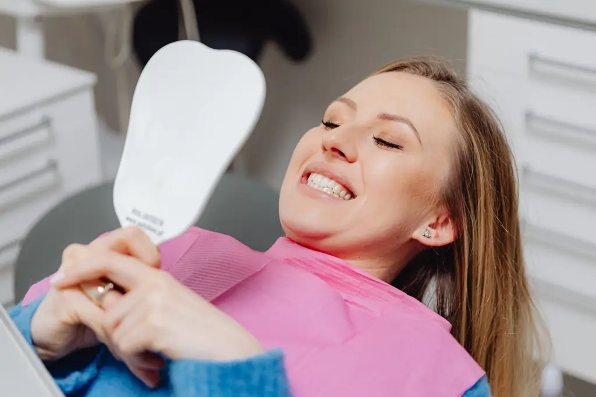

Gouttières transparentes
Une série de gouttières sur mesure qui déplacent les dents par étapes, à porter environ 22 h par jour.
Des dents alignées sans bagues visibles, et le résultat en 3D avant de commencer.
Gouttières transparentes, amovibles, quasi invisibles au travail comme en photo. Un scan 3D de vos dents en quelques minutes, sans pâte, et une simulation de votre sourire final avant toute décision.
Consultation de 45 minutes, résultat simulé le jour même.

Cliquez sur votre situation : le motif de rendez-vous se remplit tout seul.
Nos traitements
Une série de gouttières sur mesure qui déplacent les dents par étapes, à porter environ 22 h par jour.
Une caméra enregistre vos dents en quelques minutes, sans empreinte désagréable.
Votre sourire final et les étapes intermédiaires visualisés avant de commencer.
Fil collé ou gouttière de nuit pour que les dents restent en place.
En option, pour finir avec un sourire aligné et éclatant.
Contrôles réguliers au cabinet, ajustements si besoin.
Votre rendez-vous
Examen, radio, scan en quelques minutes.
Vous voyez le résultat et la durée estimée.
Prix total, mensualités, ce que la mutuelle peut rembourser.
Nouvelles gouttières par étapes, contrôles réguliers.
Parcours de soin
Patiente de 31 ans
Patient de 44 ans
Patiente de 27 ans
Nos engagements
Dr Sarah Benhamou, chirurgien-dentiste, orthodontie de l'adulte
« Personne au bureau ne s'est rendu compte que je portais des gouttières. Huit mois plus tard, mes dents sont droites. »
« La simulation m'a convaincu. Le résultat final est exactement celui qu'on m'avait montré. »
Questions fréquentes
Votre question n'est pas là ?
Appelez-nous au 04 65 71 47 83.
L'Assurance maladie ne rembourse pas l'orthodontie commencée après 16 ans. Beaucoup de mutuelles prévoient un forfait : le devis vous permet de le demander.
Souvent de six mois à un an et demi selon le déplacement à obtenir. La simulation indique une durée estimée pour votre cas.
Elles sont transparentes et fines : la plupart des gens ne les remarquent pas. Vous les retirez pour manger et vous brosser les dents.
Environ 22 heures par jour pour que le traitement avance comme prévu.
Non. Certains déplacements complexes demandent un appareil fixe. Nous vous le disons lors de la consultation.
Une contention (fil collé ou gouttière de nuit) maintient les dents en place durablement.
Rendez-vous
Dites-nous ce qui vous gêne. Nous vous rappelons pour fixer la consultation avec simulation.
Du lundi au samedi, 9 h à 19 h
9 avenue Jean-Médecin, 06000 Nice
Patients venant de Nice, Saint-Laurent-du-Var, Cagnes-sur-Mer, Villefranche-sur-Mer, Cannes, Antibes.